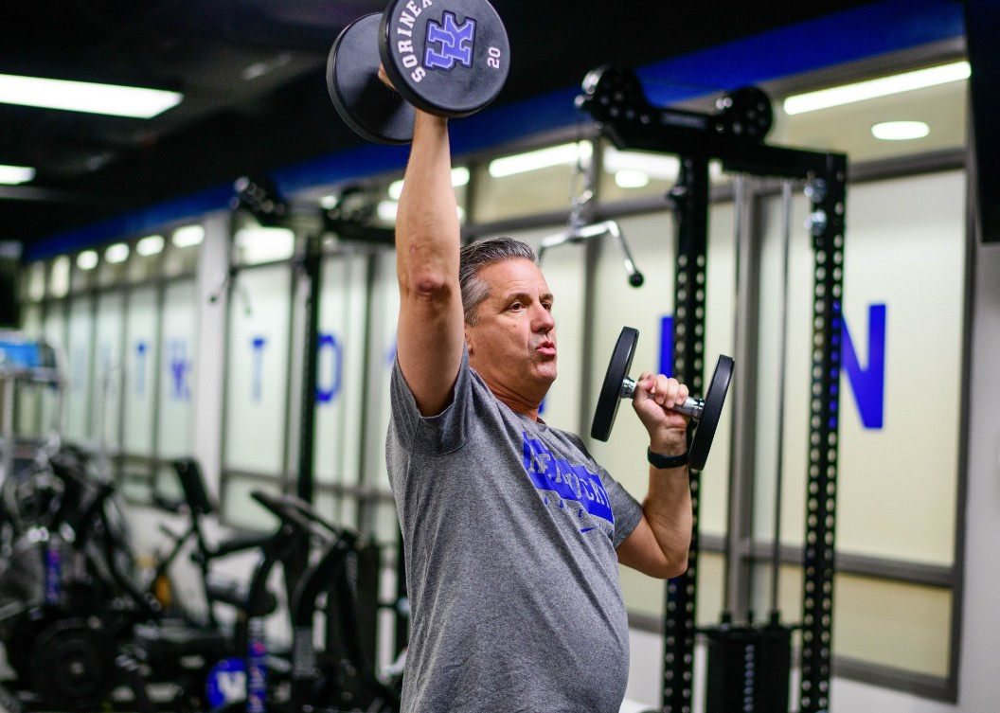

"You better come here and get an opinion"
Orthopaedic Surgery & Sports Medicine
Coach Cal had been dealing with hip pain for years. But when that pain finally got in the way of doing his job, he trusted the experts at UK HealthCare for the hip replacement he needed.
Read Coach Cal's Story